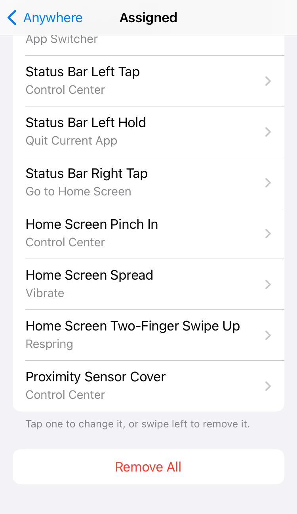
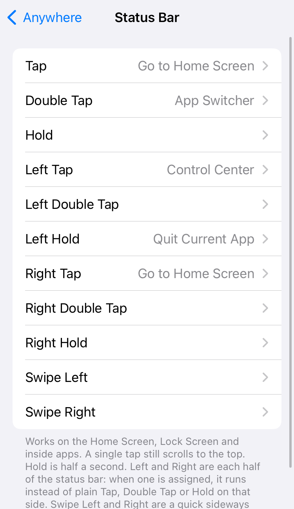
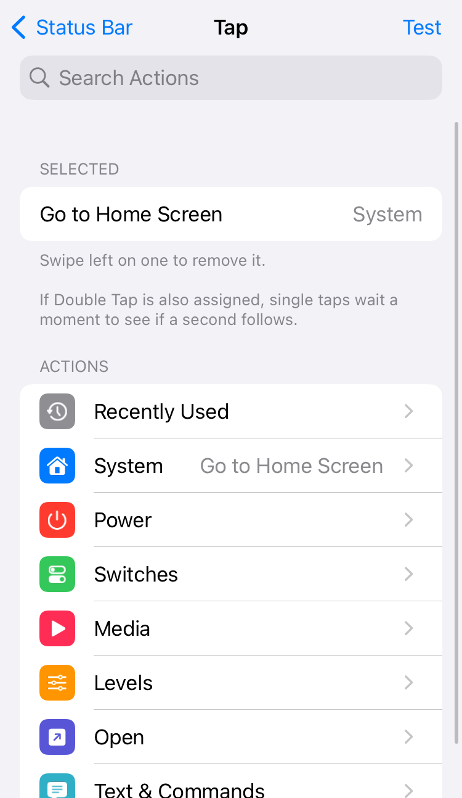
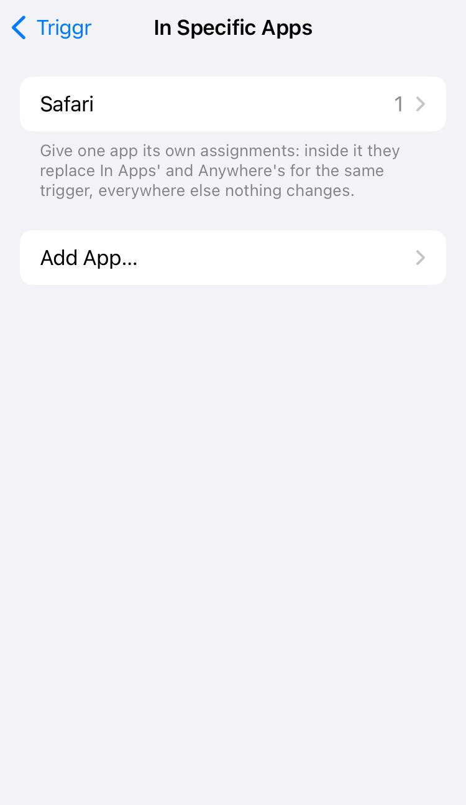
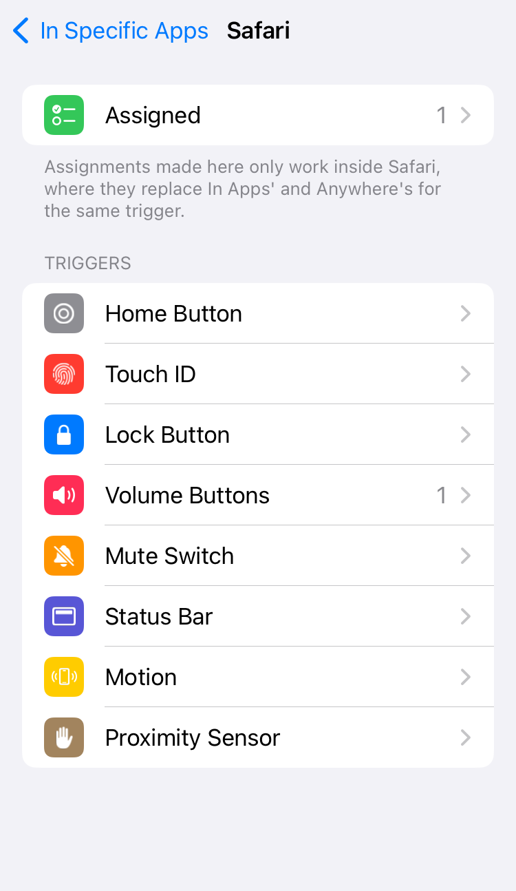
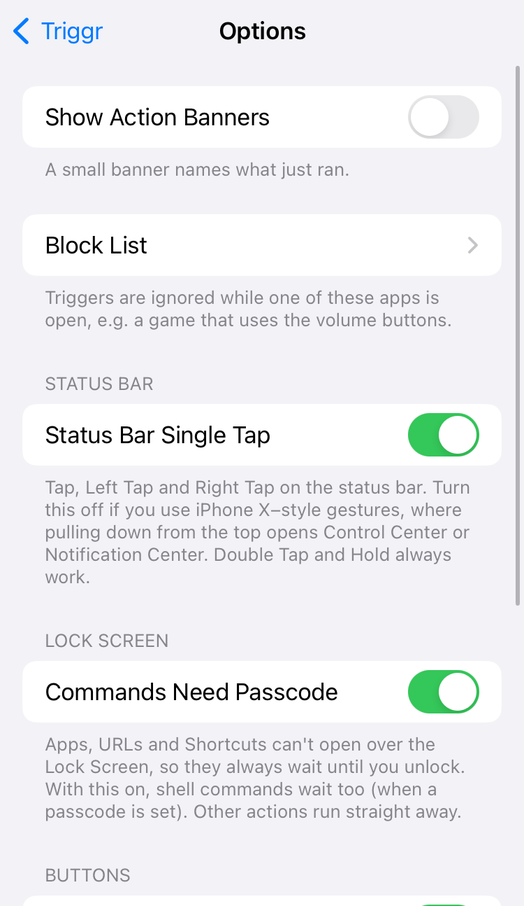

Activator-style triggers for modern jailbreaks. Pick a trigger, pick what it runs, in Settings → Triggr or the Triggr app. Triggr only changes a button when you assign something to it.








Original work by John d_ie, inspired by Activator (Ryan Petrich). App pickers by AltList (opa334). Developed with AI assistance (Claude Code) and tested on device.